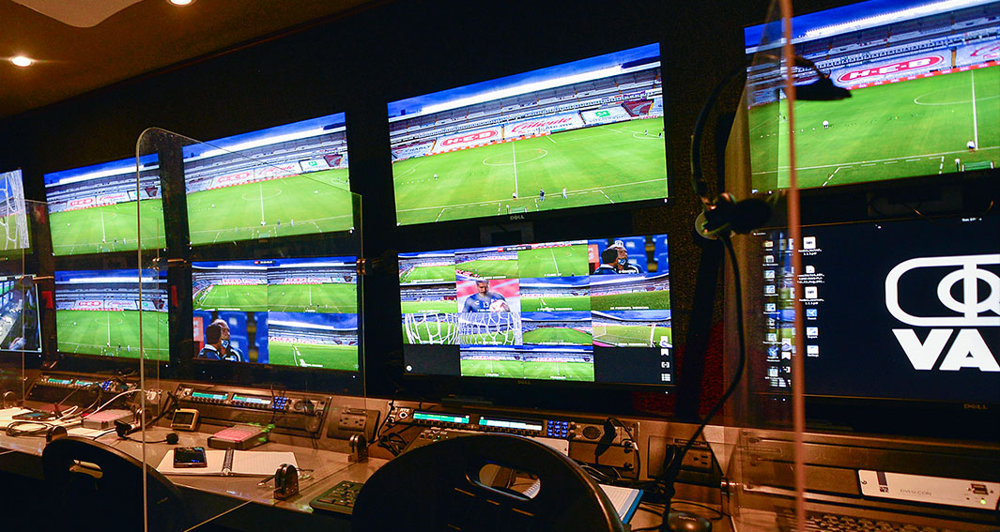

Var
En fútbol, el árbitro asistente de video o árbitro asistente de vídeo, también conocido por las siglas VAR (del inglés Video Assistant Referee), o simplemente como videoarbitraje o arbitraje por vídeo, es un sistema de asistencia arbitral cuyo objetivo es evitar flagrantes errores humanos que condicionen el resultado.
Durante el partido, uno o varios jueces de video están dentro de una sala de realización, observan la señal de televisión y tienen acceso a la repetición de las jugadas. El árbitro principal está comunicado con el árbitro asistente de video a través de un auricular. Si se produce una acción polémica, los jueces la revisan e informan al árbitro para que tome la decisión final. La revisión está limitada a cuatro casos con el juego interrumpido: goles, penales, expulsiones directas y confusión de identidad.
